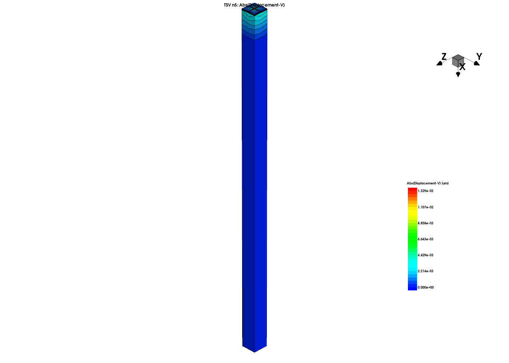
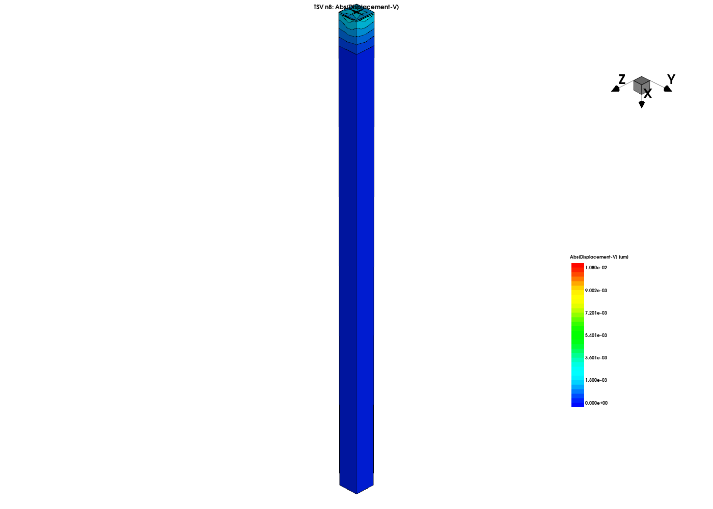
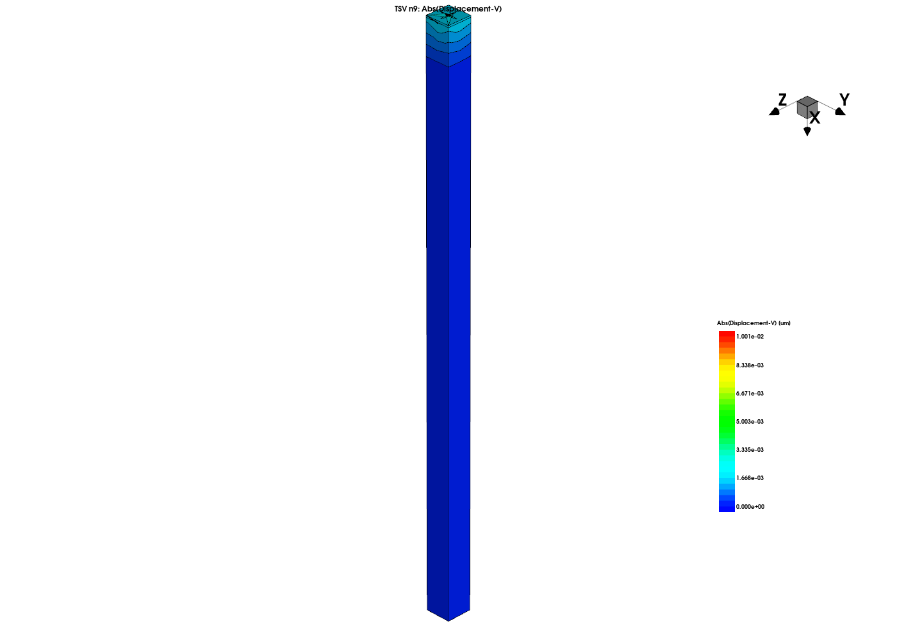
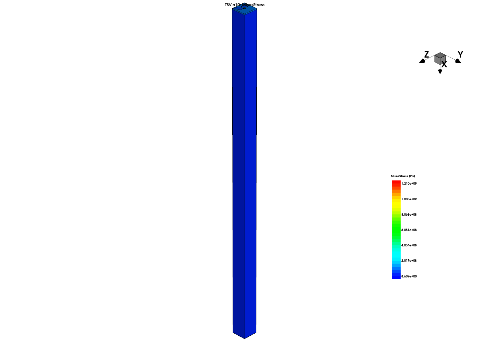
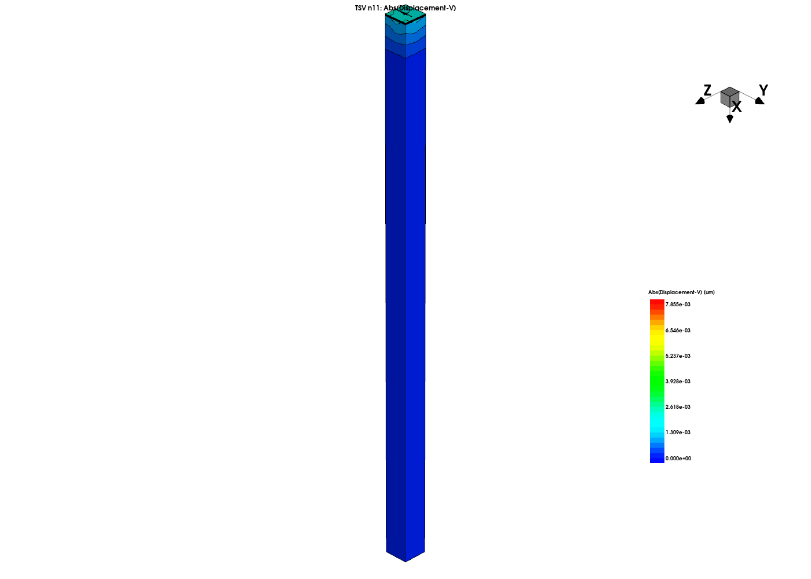

- Status
- Matched Integrated
- Mode
mode mechanics- Configuration
- The OCR-converted directory is the original input. The repository integrates a mesh-simplified version. cmd_flat and cmd organize the same inputs differently; they are not the original and simplified versions.
- Capabilities
- TSV thermal stress · temperature history · material / mesh preprocessing · fixed displacement and directional constraints
- Execution flow
- Photographs → OCR / correction → 7 original chains × 3 stages → repository mesh-simplified version → verification workflow
- Execution notes
- The original verify_in_vm.sh performs vendor syntax checks only: 28 expanded files plus one expanded template. The user confirmed integration of the simplified version; repository paths, verification entry point and current results remain to be checked.
- Commands
Geometry: n5..n11_dvs.cmd (7 files)Material / mesh preprocessing: n19..n25_sis.cmd (7 files)Thermomechanical solution: n40..n46_sis.cmd (7 files)Corresponding pp* copies: 21 files; common templates / execution graph: 4 files
TSV_Local
TSV
Result
Group 1 · n5 → n19 → n40

Group 2 · n6 → n20 → n41
Group 3 · n7 → n21 → n42
Group 4 · n8 → n22 → n43

Group 5 · n9 → n23 → n44

Group 6 · n10 → n24 → n45

Group 7 · n11 → n25 → n46

GT-A
Pending · Equivalence: Not validated
The equivalent GT-A script is pending.
Original input: seven three-stage chains
| Group | Geometry | Material / mesh | Thermal stress |
|---|---|---|---|
| 1 | n5_dvs.cmd | n19_sis.cmd | n40_sis.cmd |
| 2 | n6_dvs.cmd | n20_sis.cmd | n41_sis.cmd |
| 3 | n7_dvs.cmd | n21_sis.cmd | n42_sis.cmd |
| 4 | n8_dvs.cmd | n22_sis.cmd | n43_sis.cmd |
| 5 | n9_dvs.cmd | n23_sis.cmd | n44_sis.cmd |
| 6 | n10_dvs.cmd | n24_sis.cmd | n45_sis.cmd |
| 7 | n11_dvs.cmd | n25_sis.cmd | n46_sis.cmd |
46 CMD files: 21 n* files, 21 corresponding pp* copies and four common files. The n / pp pairs and cmd / cmd_flat copies were byte-compared; copies do not increase the case count.
Historical original-version run: 28 expanded Interconnect files and one expanded template passed syntax checks; all seven unique SDE geometries were generated. In the n5 → n19 → n40 chain, n19 took approximately 16 minutes 51 seconds and produced 1,005,445 points / 6,022,785 elements. n40 entered the mechanics solver but ran out of memory without producing a result TDR. This is not a result for the repository’s simplified version.
CMD inventory (46 physical entries, including historical copies)
cmd/common/gexec.cmdcmd/common/sde_dvs.cmdcmd/common/sdemodel_msh.cmdcmd/common/sinterconnect_sis.cmdcmd/geometry/n10_dvs.cmdcmd/geometry/n11_dvs.cmdcmd/geometry/n5_dvs.cmdcmd/geometry/n6_dvs.cmdcmd/geometry/n7_dvs.cmdcmd/geometry/n8_dvs.cmdcmd/geometry/n9_dvs.cmdcmd/geometry/pp10_dvs.cmdcmd/geometry/pp11_dvs.cmdcmd/geometry/pp5_dvs.cmdcmd/geometry/pp6_dvs.cmdcmd/geometry/pp7_dvs.cmdcmd/geometry/pp8_dvs.cmdcmd/geometry/pp9_dvs.cmdcmd/preprocess/n19_sis.cmdcmd/preprocess/n20_sis.cmdcmd/preprocess/n21_sis.cmdcmd/preprocess/n22_sis.cmdcmd/preprocess/n23_sis.cmdcmd/preprocess/n24_sis.cmdcmd/preprocess/n25_sis.cmdcmd/preprocess/pp19_sis.cmdcmd/preprocess/pp20_sis.cmdcmd/preprocess/pp21_sis.cmdcmd/preprocess/pp22_sis.cmdcmd/preprocess/pp23_sis.cmdcmd/preprocess/pp24_sis.cmdcmd/preprocess/pp25_sis.cmdcmd/solve/n40_sis.cmdcmd/solve/n41_sis.cmdcmd/solve/n42_sis.cmdcmd/solve/n43_sis.cmdcmd/solve/n44_sis.cmdcmd/solve/n45_sis.cmdcmd/solve/n46_sis.cmdcmd/solve/pp40_sis.cmdcmd/solve/pp41_sis.cmdcmd/solve/pp42_sis.cmdcmd/solve/pp43_sis.cmdcmd/solve/pp44_sis.cmdcmd/solve/pp45_sis.cmdcmd/solve/pp46_sis.cmd